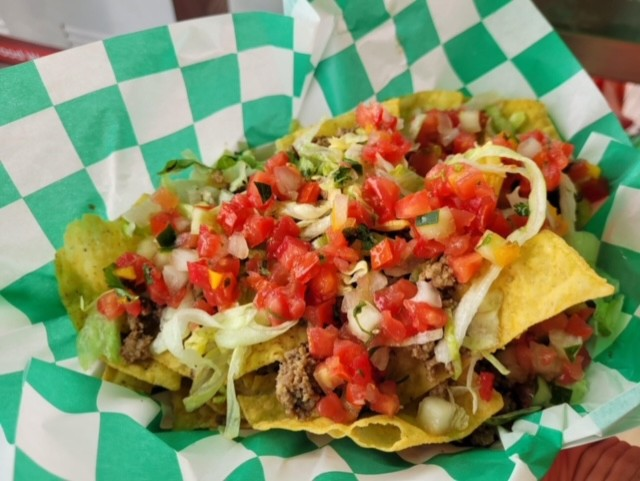

Nachos
Nachos smothered in melted soft American White Cheese
These nachos are sure to be the talk of the party. Crunchy chips, seasoned beef, topped with your favorite vegetables, and finally add soem smothered white cheese, these are sure to be a hit!
Ingredients needed
- On the Border Cafe Tortilla Chips
- Ground Beef
- Shredded Lettuce
- Ground Coriander
- Ground Cumin
- Slow melt American Cheese (Gordo's is a favorite)
- Pico de Gallo
Steps to make the Nachos
- Brown the beef and mix with Coriander and Cumin during browning
- Place as many chips as desired on a plate
- sprinkle ground beef on top of chips
- top with lettuce and pico de gallo as needed
- smother the melted chees on top
Odin Recipes